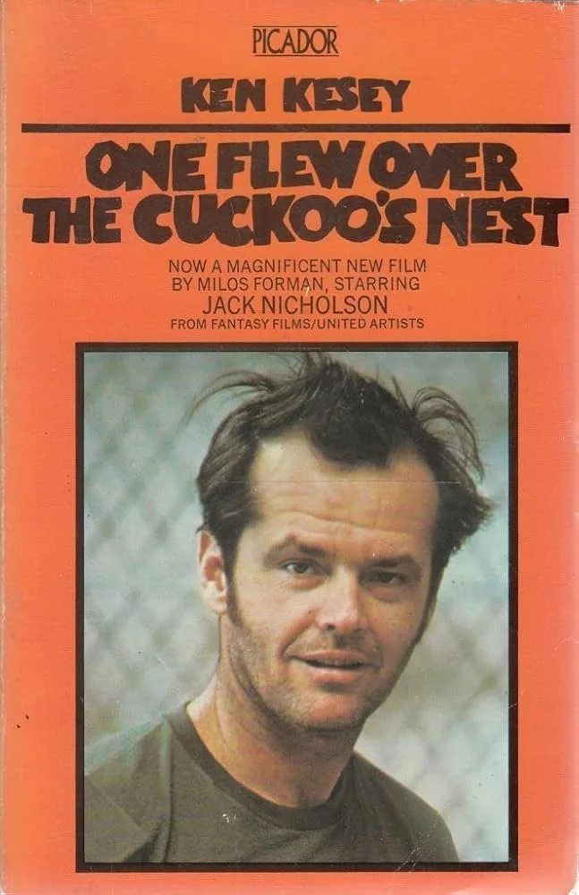

Tumbleweed Words
One piece of flash fiction or poetry.
Free, every week.
“Everyone wears black so hard you don’t notice
there are differing shades.”
Free · Weekly · No spam · Unsubscribe any time
Most adaptations fail. These ten understood what to cut, what to keep, and what only cinema can do.

Most book to film adaptations are mediocre. That is an honest starting point and in fairness it takes days to read a book, and films don’t have days. A novel gives you five hundred pages to live inside a character’s head. A film gives you two hours to watch people do things that remind you of the novel, allow you to judge and contrast performance versus description. The journey between these two forms is narrow and most directors fail to represent what the reader imagines.
The great adaptations are the ones that understand the industry in which they operate. They know what to cut and what to keep. Sometimes they know what to add in so that sentiment or tone or pace or reveal isn’t lost. The ten films on this list are the movies I return to, often when I want to see a book properly served by another medium or even improved by it. Taken somewhere the book could never have reached on its own.
A few rules I set for myself before writing this piece. The film had to be demonstrably built from a book, not just thematically inspired by one. The book had to be a real literary source, not a summary or a concept paper. And at least some of the work of the film had to be visible as an act of translation, not just an act of filmmaking. Below, in order, the ten I think matter most.
Directed by Miloš Forman. Based on Ken Kesey’s 1962 novel.
The hardest thing about adapting Cuckoo’s Nest is that the book is not told by Randle McMurphy. It is told by Chief Bromden, a half-Native patient who has been pretending to be deaf and mute for years, and whose hallucinations about a mechanical Combine that runs the ward are central to the novel’s meaning. The book is a story about institutional control told by the most marginalised person in the institution. McMurphy is the catalyst but not the narrator.
Forman’s film removes Bromden’s voice entirely. The Chief becomes a silent supporting character, literally silent for most of the film, and McMurphy played by Jack Nicholson takes centre stage. This is a decision most purists of the novel still argue with fifty years later, because the book’s whole ideological structure hinges on the Chief’s perspective.
And yet the film works. It wins all five major Oscars. Forman understood that cinema has no equivalent for Kesey’s interior paranoid monologue, so he translated the idea into something cinema does well: a group portrait of men in captivity with a single outsider who disrupts them. The Chief’s story is still there, just told through his face and his silences rather than his voice. The final scene, when he lifts the control panel and escapes through the window, is the book’s ending made visible in a way no voiceover could match.
This is the trade an adaptation has to make. Forman knew it. Kesey famously hated the film. Both men were right in their own way.
Directed by Francis Ford Coppola and based on characters from Mario Puzo’s 1969 novel with Puzo co-writing the screenplay.
The Godfather Part II is the rare sequel that improves on the first film by doing something the book never did. Puzo’s novel tells the Corleone story in one continuous sweep. Coppola and Puzo rewrote that structure for the second film into two parallel timelines running against each other: the young Vito Corleone rising in early twentieth-century New York, and Michael Corleone consolidating power in the 1950s Nevada desert. Neither story exists in the book in this form.
The double-timeline structure makes Part II a better adaptation of the novel’s themes than the first film was, because it lets you see the cost of what the family built across two generations at once. You watch Vito create the thing Michael is destroyed by. That argument exists in Puzo’s novel but is never made this cleanly. Coppola found it in the material and dramatised it.
De Niro as young Vito is the performance that anchors the film. He has maybe four pages of dialogue in English across two and a half hours, most of it in Sicilian. He learned the language for the role. That commitment is what the whole film is made of: a willingness to sit with the source material long enough to find the version of it that only cinema can show you.
Directed by Danny Boyle. Based on Irvine Welsh’s 1993 novel.
Trainspotting is the adaptation that made a novel with almost no traditional plot and almost no traditional English prose into a global hit film. Welsh’s book is a collection of linked short pieces written in phonetic Leith dialect, many of them narrated by different characters, most of them about heroin. There is no arc. There is barely a protagonist. A dead baby crawls across a ceiling. People die of AIDS. Edinburgh is a city you leave or a city that kills you.
Boyle and screenwriter John Hodge had to construct a plot from fragments. They did it by pulling Renton forward as the central voice, softening the dialect just enough for non-Scottish audiences to follow without losing the register, and building a three-act structure around the Edinburgh-to-London heist that the book handles almost as an afterthought.
The film’s opening monologue — choose life, choose a job, choose a family — is not in the book in that form. It is built from scraps of Renton’s interior voice across several chapters and reassembled into the film’s thesis statement. This is adaptation as curation. Boyle and Hodge found the seven most quotable minutes of Welsh’s prose and put them at the front of the film, and everything that follows has to live up to that declaration.
The soundtrack is the second act of adaptation. Iggy Pop, Underworld, New Order, Lou Reed. Music replaces the interior voice the book uses. Every time Renton feels something the film cannot show, a song plays instead.
Directed by Joel and Ethan Coen. Based on Cormac McCarthy’s 2005 novel.
McCarthy’s prose is supposed to be unfilmable. No quotation marks. Long biblical paragraphs about heat and dust. A density of Old Testament reference that should not survive translation to any visual medium.
The Coens understood that McCarthy’s style is really a form of minimalism. Strip the ornamentation away and what you have is dialogue, landscape, and inevitability. All three translate to cinema cleanly. The film is shot almost without music. Long stretches of desert silence. Javier Bardem’s Anton Chigurh speaks the book’s most famous dialogue almost verbatim, because McCarthy already wrote it for the screen whether he meant to or not.
The ending is where the adaptation earns its place on this list. The book ends with Sheriff Bell retiring and telling his wife about two dreams he had about his dead father. The Coens preserve this almost exactly. Tommy Lee Jones at a kitchen table recounting a dream about riding through a mountain pass carrying a fire in a horn. No resolution. No killer caught. The darkness continues. Most studios would have rewritten this ending. The Coens kept it, and the film became a masterpiece because of that refusal.
Directed by James Ivory. Based on Kazuo Ishiguro’s 1989 Booker Prize-winning novel.
Ishiguro’s novel is told entirely in the voice of Stevens, an English butler whose unreliable first-person narration slowly reveals that he served a Nazi sympathiser through the 1930s, missed his chance at love with the housekeeper Miss Kenton, and has built his entire identity around a profession that does not deserve it. The book is a masterclass in the thing prose does best: dramatic irony delivered through a narrator who cannot see his own life clearly.
Ivory’s film should not work. You cannot show unreliable narration on screen. You cannot let the audience know what the narrator does not know when there is no narrator speaking. And yet the film is one of the great adaptations of the last forty years, because Anthony Hopkins as Stevens gives the performance of his career and does all the work silently. His face is the voiceover. Every restrained flicker of the eye tells you what Stevens is not saying.
Emma Thompson as Miss Kenton is the other half. She is playing a woman who has loved Stevens for two decades and understands him better than he understands himself. The scene where she reads a novel in the servants’ hall and he takes it gently from her hands to see what she is reading, and they stand inches apart saying nothing, is one of the most quietly devastating romantic scenes in cinema. It is all there in the book. It is the rare adaptation where the film makes you understand the book better than a first reading did.
Directed by Francis Ford Coppola. Based on Joseph Conrad’s 1899 novella Heart of Darkness.
Most of the films on this list are faithful to their source in obvious ways. Apocalypse Now is not. Coppola took Conrad’s novella about a Belgian trading company steamer pushing up the Congo River to find a rogue ivory trader, and moved the entire thing to a US Navy patrol boat pushing up the Nung River in Vietnam to find a rogue American colonel. The two stories are the same. The setting is entirely different.
This is free adaptation at its best. Coppola understood that what Conrad was really writing about was not colonialism in the Congo specifically but the way imperial power corrupts the men who carry it out. Shift that argument to Vietnam in 1969 and the novella becomes more urgent than it was in 1899. Marlon Brando playing Kurtz whispers Conrad’s final line — the horror, the horror — and it lands harder because the audience has just spent two and a half hours in an American war the country was still trying to process.
The production nearly killed Coppola. Martin Sheen had a heart attack on set. A typhoon destroyed the sets. Brando showed up massively overweight and refused to read the novella. The film took three years to edit. Every chaos on the production somehow ended up mirroring the chaos of the story, and the film is better for it. This is adaptation as possession.
Directed by Anthony Minghella. Based on Patricia Highsmith’s 1955 novel.
Highsmith’s novel is a cold book. Tom Ripley kills Dickie Greenleaf and takes over his life, and the prose never tells you how to feel about it. You are left to work out your own relationship with a character who is charming, queer, murderous, and pathologically driven. The book’s famous line is Ripley thinking to himself that he would rather be a fake somebody than a real nobody.
Minghella’s film does something the book does not. It makes Ripley’s sexuality and his longing visible rather than subtextual. Matt Damon plays Ripley as a man who is in love with Dickie Greenleaf and cannot have him, and the murder that follows is not cold calculation but a kind of devastated rage. This is not in Highsmith. Highsmith’s Ripley is flatter, more sociopathic, more coolly opportunistic.
Purists argue the film softens the book. I think it understands something the book keeps offstage. Highsmith was herself a queer woman writing in 1955 and could not be explicit about what Ripley was actually feeling. Minghella in 1999 could. The adaptation makes the subtext text, and the film is better for it without the book being worse because of it.
Jude Law as Dickie and the late Philip Seymour Hoffman as Freddie Miles are both doing career-best work. The score by Gabriel Yared is the other thing the film has that the book cannot: an actual sound of creeping dread.
Directed by Ang Lee. Based on Annie Proulx’s 1997 short story, collected in Close Range: Wyoming Stories.
Proulx’s story is under ten thousand words. It first appeared in the New Yorker and was collected in her second story collection. Lee’s film is two hours and fourteen minutes long. The expansion is the work of adaptation.
Larry McMurtry and Diana Ossana wrote the screenplay. They did not pad the source. They opened it up. Every scene in the film is either in Proulx’s story already or is a natural extension of a moment the story compresses into a sentence. The twenty years of Ennis and Jack’s relationship that the story tells in paragraphs becomes the central architecture of the film’s time structure. The wives who are peripheral in the story become real characters in the film. The landscape that Proulx describes in prose becomes Wyoming itself, photographed by Rodrigo Prieto in a way that makes the mountain a third lead character.
The adaptation works because the writers understood what Proulx was doing with compression and then found the equivalent cinematic move: patience. The film is slow in the way the story is dense. Both versions ask you to sit with two men who cannot be together in the world they live in, and both versions refuse to let you off the hook at the end. The last line of the story — if you can’t fix it you’ve got to stand it — is also the last line of the film. It is one of the great last lines in American literature and in American cinema both.
Directed by Rob Reiner. Based on Stephen King’s 1982 novella The Body, collected in Different Seasons.
Stephen King wrote The Body as a serious literary novella about working-class boyhood in rural Maine, four boys walking along railroad tracks to find a dead body because one of them heard about it on the radio. It is one of his best pieces of prose and nothing like the horror he is known for.
Reiner’s film makes the material sing. River Phoenix as Chris Chambers is the performance. Wil Wheaton as Gordie is the narrator. Richard Dreyfuss plays the adult Gordie in the framing narration, typing the story into a word processor at his kitchen table. The framing device is an addition to King’s novella that translates the book’s meaning into something cinema can hold.
I include Stand by Me on this list because working-class boyhood is a register literary cinema almost never gets right, and this film gets it right. The banter is exactly how boys talk when they are trying not to say anything real. The fight between Ace Merrill and the boys at the end lands because the film has earned it. And the closing line — I never had any friends later on like the ones I had when I was twelve, Jesus, does anyone — is one of those sentences that contains an entire adult life.
King himself has said on record that this is his favourite adaptation of his own work. He is right.
Directed by Frank Darabont. Based on Stephen King’s 1982 novella Rita Hayworth and Shawshank Redemption, also collected in Different Seasons.
Two King novellas in the top ten feels like a lot until you remember that Different Seasons is the book where King wrote his most literary prose, and four of the four novellas in that collection were adapted into films, three of them successful.
Shawshank makes the list for a specific reason that connects to the number one entry. Like Cuckoo’s Nest, it is a story told by a character who is not the protagonist. Red narrates Andy Dufresne’s story in both the novella and the film, but Andy is the one the story is really about. The structural move the film makes is to trust Red’s voice and let Morgan Freeman carry the whole thing.
Darabont’s adaptation is faithful in the granular ways that matter. The prison is exactly the prison King wrote. The rooftop tar scene, the opera record, Rita Hayworth on the cell wall, the long slow friendship between Red and Andy across decades. All of it present in the novella. The film’s small additions — Brooks hanging himself, the library expansion, the scope of Andy’s final vindication — deepen the novella rather than betray it.
The film was a box office disappointment in 1994. It now sits at the top of the IMDb user-voted list and has done for over a decade. The reason is that audiences responded to exactly the thing King had written: a story about hope and patience and the slow arithmetic of a life lived under injustice. Darabont knew what he had and did not get in its way.
Every one of these films understands that a faithful adaptation is not the same as a literal adaptation. Forman cuts the narrator. Coppola splits the timeline. Boyle and Hodge assemble the opening monologue from scraps. The Coens preserve the ending. Ivory replaces the voiceover with a face. Coppola moves the river. Minghella makes the subtext text. Lee expands a short story into a film. Reiner and Darabont trust the narrators King gave them and let the stories breathe.
Adaptation is interpretation. The best ones don’t copy the book. They read and understand. Then the director makes the version only cinema can make. When it works, you get a film that honours the book and also stands alone. When it fails, you get a glossy two-hour illustration of the book’s plot with none of its meaning.
All ten of these films belong in the first category. Read the books. Watch the films. Then read the books again. That is the only way to see the trade in full.
If you want more on what literary fiction is doing right now, my piece on literary fiction in 2026 covers the landscape these adaptations emerged from. For more on why men especially should read more fiction, my essay I Am the Only Man I Know Who Still Reads Novels covers the other half of the argument.
If this landed, buy me a coffee.
What is the most faithful book to film adaptation ever made?
The Remains of the Day (1993) is the most faithful adaptation on this list and arguably the most faithful serious literary adaptation of the last forty years. James Ivory and screenwriter Ruth Prawer Jhabvala preserve Ishiguro’s structure, timeline, dialogue, and emotional restraint almost entirely, relying on Anthony Hopkins and Emma Thompson to carry the interior life of the novel through performance rather than voiceover. Faithful adaptation doesn’t mean literal adaptation. It means understanding what the book is actually doing and finding the cinematic equivalent.
Which adaptation is better than the book it’s based on?
Most critics would argue The Godfather Part II is better than the Puzo novel it draws from, because Coppola and Puzo restructured the material into a dual-timeline story that the book never attempted. Apocalypse Now is arguably better than Heart of Darkness, though they’re different enough works that comparing them is a stretch. The Shawshank Redemption expands and deepens King’s novella in ways that make the film the more resonant version. These three are the strongest “better than the book” candidates on the list.
Why do most book to film adaptations fail?
Two reasons. First, the adaptation is too literal — the director tries to translate every scene from the book to the screen and ends up with a glossy illustration of the plot with none of the book’s meaning. Second, the adaptation is too free — the director uses the book as a loose inspiration and strips out the specific thing that made the book work in the first place. The best adaptations find the third path: keep what’s essential, cut what doesn’t translate, and add what cinema needs that the book didn’t.
Is Trainspotting a faithful adaptation of Irvine Welsh’s novel?
Not literally, but yes in spirit. Welsh’s novel is a collection of linked short pieces in phonetic Leith dialect, narrated by different characters, with no three-act structure and no central protagonist. Danny Boyle and screenwriter John Hodge built a plot from fragments, pulled Renton forward as the main voice, and softened the dialect just enough for non-Scottish audiences without losing the register. The film is one of the great examples of an adaptation that honours the source by reshaping it, rather than copying it.
Why does One Flew Over the Cuckoo’s Nest change the narrator?
Kesey’s novel is narrated by Chief Bromden, a patient pretending to be deaf and mute, whose hallucinations about a mechanical Combine running the psychiatric ward are central to the book’s meaning. Miloš Forman removed the Chief as narrator and made McMurphy the protagonist instead, because cinema has no clean equivalent for Kesey’s interior paranoid monologue. The trade cost the film some of the book’s ideology but gained it a visual group portrait that wouldn’t have worked any other way. Kesey hated the change. The film still won all five major Academy Awards.
Which Stephen King adaptation is the best?
The Shawshank Redemption (1994) and Stand by Me (1986) are the two strongest, and both are adapted from novellas in King’s 1982 collection Different Seasons, which is the book where King wrote his most literary prose. King himself has said on record that Stand by Me is his favourite adaptation of his own work. Most critics would put Shawshank first for its craft, its scope, and the quiet trust it places in Morgan Freeman’s narration. Both belong on any serious list of King adaptations.
Written on the road and sent directly to your inbox. No ads, no noise. Just the work.
Free · Weekly · No spam · Unsubscribe any time
Tumbleweed Words
“Everyone wears black so hard you don’t notice
there are differing shades.”
Free · Weekly · No spam · Unsubscribe any time